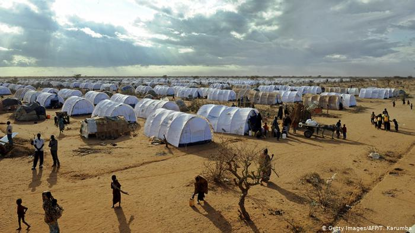
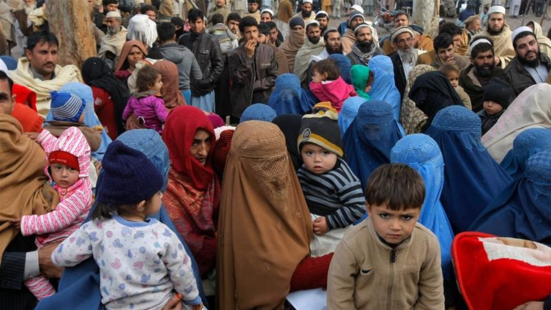

Refugees of the Syrian Civil War are citizens and permanent residents of Syria, who have fled their country over the course of the Syrian Civil War. The pre-war population of the Syrian Arab Republic was estimated at 22 million (2017), including permanent residents. Of that number, the United Nations (UN) identified 13.5 million (2016) as displaced persons, requiring humanitarian assistance. Of these, since the start of the Syrian Civil War in 2011 more than six million (2016) were internally displaced, and around five million (2016) had crossed into other countries, with most seeking asylum or placed in Syrian refugee camps established in Turkey (3,614,108),Lebanon (929,624), Jordan (662,010), Egypt (131,433),and other countries.

african Refugees
Ongoing clashes between armed groups continues to internally displace communities.
Since September 2016 the situation in CAR has significantly declined.
Some 60% of the country still under the control of armed groups, more than 25% of the population (680,000 people) is either internally displaced or refugees in border countries (500,000 people).
State institutions are weak, and education and child protection services have been badly affected. Children are often at risk of separation from their families, violence, sexual abuse or recruitment as soldiers.

Afghanistan refugees
Afghanistan refugees are nationals of Afghanistan who left their country as a result of major wars or persecution. The 1979 Soviet invasion of Afghanistan marks the first wave of internal displacement and refugee flow from Afghanistan to neighboring Pakistan and Iran that began providing shelter to Afghan refugees.